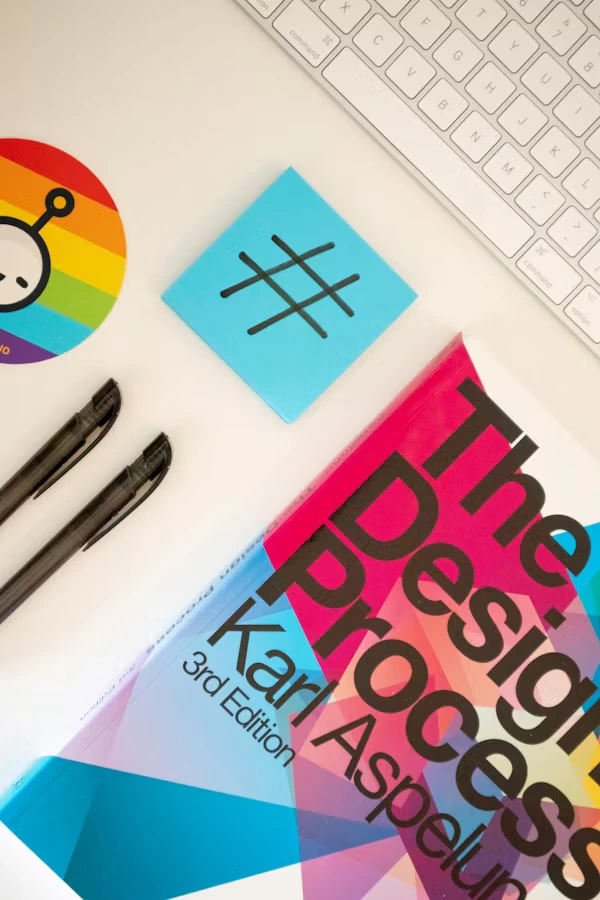

Messages
Updates and conversations from your Stackly studio team.
Recent conversations
3 unread
Maya Chen · Project LeadI've added the latest design review notes to your Full Site project.
Today · 10:24 AM 
Daniel Osei · DeveloperThe responsive prototype is ready for your feedback.
Yesterday · 4:15 PM 
Priya Nair · Brand DesignerI've sent over the updated brand assets you requested.
3 days ago
Response Status
On trackAverage team response
Usually within 4 hoursNext scheduled review
Thursday · 3:00 PMOpen conversations
2 active project threads
Contact the Team
Available todayProject questionsMaya can help with scope, feedback, and delivery timelines.
Typical response: under 4 hours Brand and visual directionPriya can help with identity, content, and visual system questions.
Typical response: same business day